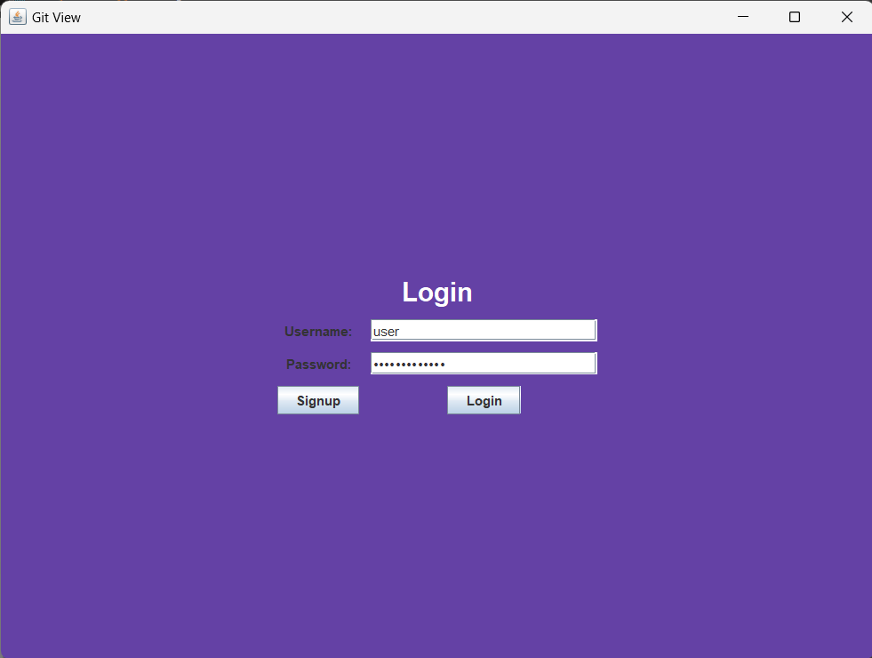
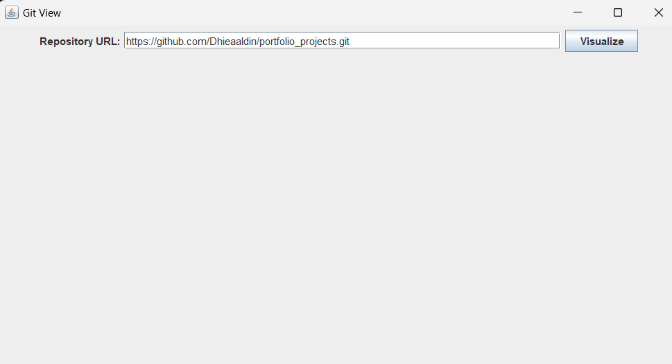
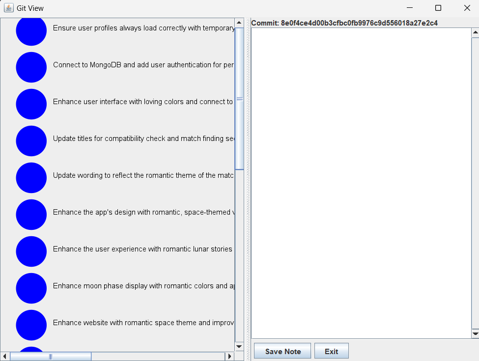

Git Visualizer – Interactive Git Repository Visualization Tool
Git Visualizer is a Java Swing-based application designed to provide a visual representation of Git repositories, especially from remote sources. The project helps users understand commit history, contributors, and relationships between commits through an interactive interface.
Objectives
- Visualize commit history from remote Git repositories
- Allow users to log in and manage personalized notes for each commit
- Improve Git learning and debugging with a more intuitive interface
Key Features
- Remote Repository Cloning: Users enter a Git URL, which is cloned using JGit
- Commit Graph Visualization: Commits are displayed as nodes; hovering shows messages
- Authentication System: Login/signup using JDBC and MySQL for secure user access
- Commit Notes: Users can add custom notes linked to commit hashes
- Three-Tier Architecture: Divided into Presentation, Business Logic, and DAO layers
Technologies Used
- Java Swing – UI design
- JGit – Git integration
- MySQL + JDBC – User authentication & note storage
- MVC / Three-Tier Architecture – Code organization
Architecture Overview
- Presentation Layer: Java Swing GUI for visual interaction
- Business Logic Layer: Manages Git operations and logic (clone, fetch, render)
- Data Access Layer: Interacts with MySQL to authenticate users and store notes
Demo Images



Code & Resources
Future Improvements
- Add support for branch visualization
- Allow filtering commits by author/date/message
- Improve UI responsiveness and dark mode
- Deploy as a web-based version using JavaFX or React + Spring